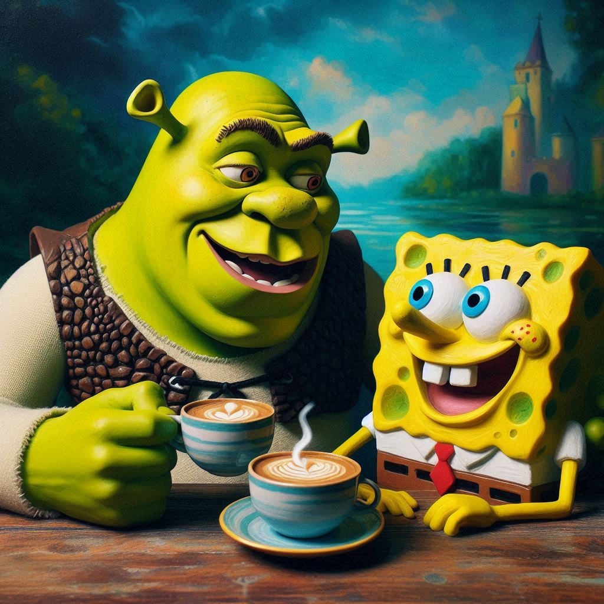

27/09/2024
Quando Shrek, cansado de seus dias no pântano, decidiu visitar um velho amigo: Bob Esponja. Algo estava estranho desde o momento em que Shrek chegou. Ao entrar na cabana, Bob estava sentado à mesa, tomando uma xícara de café. O rosto sorridente de Bob parecia mais pálido que o normal.